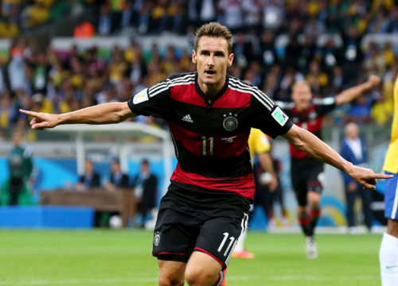
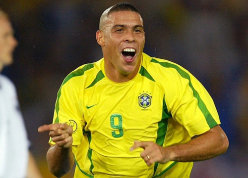
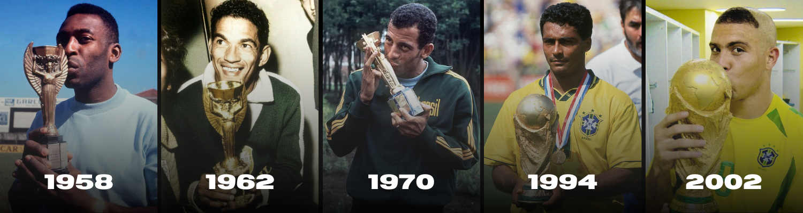

Curiosidades
Os maiores artilheiros
Miroslav Klose é o maior artilheiro da história da Copa do Mundo FIFA, com 16 gols marcados ao longo de suas participações. O top 3 é composto por:
- Miroslav Klose [ALE] - 16 gols
- Ronaldo Nazário [BRA] - 15 gols
- Gerd Müller [ALE] - 14 gols



Os únicos pentacampeões
A Seleção Brasileira é a única equipe a conquistar cinco títulos da Copa do Mundo FIFA, sendo assim, a maior campeã da história da competição. Além de ser a única seleção a ter participado de todas as edições da Copa desde a primeira edição.

Voltar ao topoA maior Copa da história
A copa do mundo de 2026 será a primeira edição a contar com 3 países-sede. Além de ser a edição com mais seleções participantes (48 seleções).
- EUA: 11 Cidades
- México: 3 Cidades
- Canadá: 2 Cidades